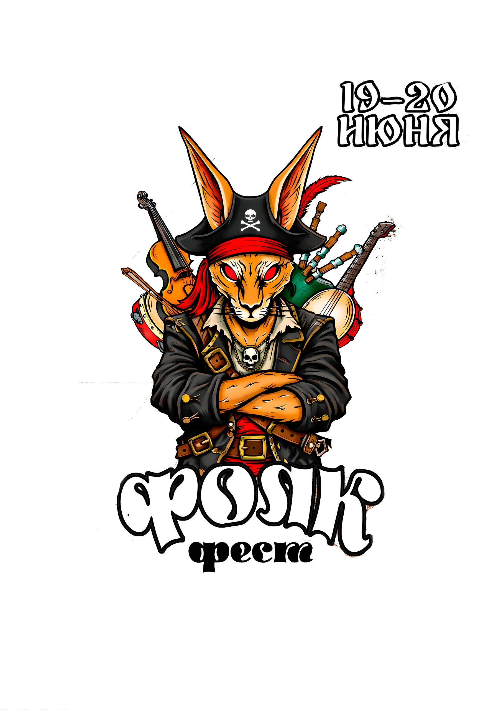

🌾 Вас ожидает 🌿
🎻Выступления известных фолк-коллективов
⚔Интерактивная зона,для настоящих пиратов!
🎨Ярмарка мастеров с авторскими сувенирами и мастер-классами
🍔Вкусные напитки и бургеры, много мяса от Zombie-бара
🌿Живописные природные пейзажи